Uitleg tests en functionaliteit
Op deze pagina vind je de inhoudelijke uitleg van de plugin functionaliteit.
Algemene concepten
Standaard project indeling
De HHNK Toolbox werkt het makkelijkst wanneer een project op een bepaalde manier is ingedeeld. Als een project op die manier is ingedeeld worden de meeste paden automatisch ingevuld wanneer je een polder selecteert. De indeling is als volgt:
Indeling project map:
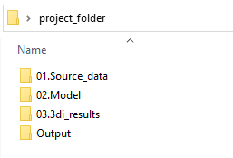
Indeling 01.Source_data:
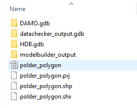
Nodig voor tests:
DAMO.gdb
datachecker_output.gdb
HDB.gdb
polder_polygon (alle extensies)
Indeling 01.Source_data/modelbuilder_output:
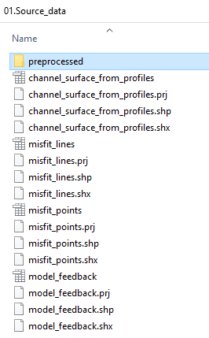
Nodig voor tests:
channel_surface_from_profiles (shapefile uit modelbuilder)
Indeling 02.Model:
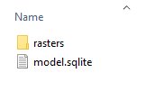
Nodig voor tests:
model.sqlite
Indeling 02.Model/rasters:
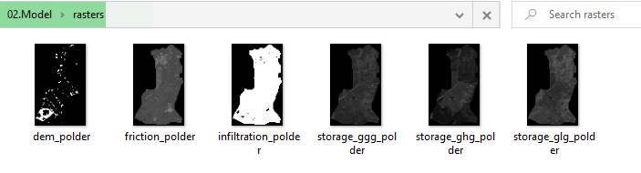
Nodig voor tests:
dem_[polder] (waar [polder] de naam van de polder is)
Indeling 03.3di_results
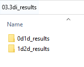
In zowel de 0d1d_results map als de 1d2d_results map staan de gedownloade resultaten van het draaien van
3di berekeningen. De conventie voor de naam van mappen is:
{naam polder} #{revisie nummer} {type test}
Bijvoorbeeld:
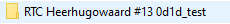
Output
De Output map is de map die (standaard) wordt gebruikt door de plugin om resultaten van tests op te slaan. De
indeling van deze map wordt bepaald door de plugin en is als volgt:
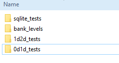
De 0d1d_tests en de 1d2d_tests mappen worden verder ingedeeld per gebruikte 3di revisie:
Bijvoorbeeld:
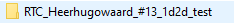
Alle mappen in Output zijn op het diepste niveau als volgt opgedeeld:
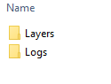
De Logs map bevat de resultaten in een menselijk leesbaar formaat. De Layers map bevat de brondata voor
lagen in QGIS. Alle bestanden in deze twee mappen worden automatisch vervangen wanneer een test opnieuw wordt
aangezet. Je kunt deze bestanden dus ook niet gebruiken als basis voor andere lagen in je project. Als je de eerdere
resultaten van een test wil behouden, kun je het best een andere output map specificeren.
QGIS project
De meeste tests die deel uitmaken van de toolbox voegen, als onderdeel van hun output, een kaartlaag (of meerdere
kaartlagen) toe aan het op dat moment geopende QGIS-project. Elke test beheert zijn eigen QGIS layer group
en diens subgroepen. De hoofdgroepen zijn als volgt:
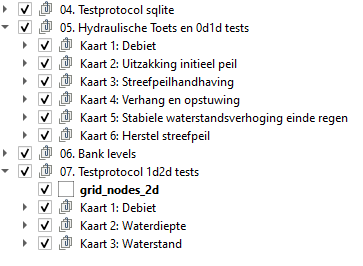
Wanneer je een test opnieuw aanzet worden deze lagen automatisch verwijderd en opnieuw aangemaakt. Als je de lagen wilt behouden (bijvoorbeeld ter vergelijking), dan kun je bijvoorbeeld de hoofdgroepen hernoemen. Let op: je zult in dit geval ook een andere output map moeten specificeren.
Modelstaat aanpassen
Het aanpassen van de modelstaat is een hulpmiddel om te zorgen dat het rekenen met een model zo foutloos mogelijk gebeurt. Binnen de werkwijze van HHNK worden twee belangrijke model toetsingen gedaan:
- 0d1d toetsing van het model t.b.v. de hydraulische randvoorwaarde (alleen watersysteem)
- 1d2d toetsing van het model t.b.v. klimaatsommen (watersysteem, maaiveld en bodem)
Door de modelstaat aan te passen worden specifieke instellingen in het model aangepast. Dit heeft voordelen ten opzichte van het werken met aparte modellen omdat andere wijzigingen in het model (zoals het aanpassen van een duiker) dan niet in twee modellen dienen te worden doorgevoerd. De aanpassingen in het model die worden gedaan bij het aanpassen van de modelstaat hebben betrekking op de uitwisseling tussen het watersysteem (1D) en het maaiveld (2D).
Met deze aanpassingen in gedachten worden drie model staten onderscheiden:
-
Niet gedefinieerd/uit modelbuilder
Van een model in deze staat wordt voor conversie aangenomen dat het een model betreft dat in de staat is zoals het uit de modelbuilder komt.
-
Hydraulische toets staat (0d1d staat)
Van een model in deze staat wordt aangenomen dat:
-
In tabel
v2_global_settings1 regel staat met de naam '0d1d_test' en sturing is uitgeschakeld (control_group_idisNULL/leeg). -
De volgende tabellen in het model staan:
backup_channels backup_manholes backup_controlled_weir_widths backup_global_settings
-
-
1d2d toets staat
Van een model in deze staat wordt aangenomen dat: * In tabel
v2_global_settings4 regels staan waarvan de naam niet is '0d1d_test' en sturing aan staat (control_group_idis nietNULL/leeg).- De tabel
backup_global_settingsbestaat.
- De tabel
Het is belangrijk dat de gedetecteerde staat overeenkomt met de daadwerkelijke staat van het model, aangezien de gedetecteerde staat van het model bepaalt welke aanpassingen er worden gedaan.
Aanpassingen per staat
Van modelbuilder staat naar hydraulische toets/0d1d staat:
| Tabel in model | Aanpassingen |
|---|---|
| v2_global_settings | Verwijderen rijen waar name niet '0d1d_test' is.Aanpassen control_group_id naar NULL. |
| v2_manhole | Aanpassen calculation_type naar '1' |
| v2_channel | Aanpassen calculation_type naar '101' |
| v2_weir | Aanpassen width naar width * 10 voor gestuurde stuwen |
Van modelbuilder staat naar 1d2d staat:
| Tabel in model | Aanpassingen 'Berekenen uit 3di resultaat' | Aanpassingen 'Uit backup van eerdere 1d2d staat' |
|---|---|---|
| v2_global_settings | Verwijderen rijen waar name '0d1d_test' is. |
Verwijderen rijen waar name '0d1d_test' is. |
| v2_cross_section_location | Oude waarden in bank_level vervangen voor berekende bank levels. |
Oude waarden in bank_level vervangen door waarden in backup_bank_levels |
| v2_manhole | Toevoegen nieuw berekende manholes. | - |
Van hydraulische toets/0d1d staat naar 1d2d staat:
| Tabel in model | Aanpassingen 'Berekenen uit 3di resultaat' | Aanpassingen 'Uit backup van eerdere 1d2d staat' |
|---|---|---|
| v2_global_settings | Verwijderen rijen waar name '0d1d_test' is.Rijen toevoegen uit backup_global_settings waar name niet '0d1d_test' is. |
Geen verschil |
| v2_channel | Aanpassen calculation_type naar originele waarde uit backup_channels |
Geen verschil |
| v2_weir | Aanpassen width naar originele waarde uit backup_controlled_weir_widths |
Geen verschil |
| v2_manhole (update) | Aanpassen calculation_type naar originele waarde uit backup_manholes |
Geen verschil |
| v2_manhole (nieuw) | Toevoegen nieuw berekende manholes. | - |
| v2_cross_section_location | Oude waarden in bank_level vervangen voor berekende bank levels. |
Oude waarden in bank_level vervangen door waarden in backup_bank_levels |
Sqlite tests
De sqlite tests zijn bedoeld om te checken of het model geschikt is om mee te rekenen. Hieronder worden de tests inhoudelijk toegelicht.
Data verificatie
Berekent het oppervlak van de polder op basis van de polder_shapefile en het ondoorlatend oppervlak in
het model. Het verschil tussen de twee zou niet te groot moeten zijn.
Koppelt de v2_cross_section_definition laag van het model (discrete weergave van de natuurlijke geometrie van de watergangen) aan de v2_channel laag (informatie over watergangen in het model). Het resultaat van deze toets is een weergave van de breedtes en dieptes van watergangen in het model ter controle.
Deze test selecteert alle gestuurde kunstwerken (uit de v2_culvert, v2_orifice en v2_weir tabellen van het model) op basis van de v2_control_table tafel. Per kunstwerk worden actiewaarden opgevraagd. Per gevonden gestuurd kunstwerk wordt ook relevante informatie uit de HDB database toegevoegd, zoals het streefpeil en minimale en maximale kruin hoogtes.
Deze test vergelijkt de minimale kruinhoogte uit de sturingstabel met de aanliggende watergangen. Als de bodemhoogte van de watergang hoger ligt dan de minimale kruinhoogte moet hier nog iets in worden aangepast door in de v2_cross_section tabel het reference_level aan te passen. Deze aanpassingen worden automatisch gegenereerd en ter goedkeuring aan de gebruiker voorgelegd.
Deze test checkt of de geometrie van een object in het model correspondeert met de start- of end node in de v2_connection_nodes tabel. Als de verkeerde ids worden gebruikt geeft dit fouten in het model.
Test checkt of de kruinhoogte of bodemhoogte van een kunstwerk lager ligt dan de bodemhoogte van aanliggende watergangen. Als dit zo is moet dat worden aangepast om met het model te kunnen rekenen.
De algemene tests is een collectie van checks op fouten die ervoor zorgen dat het model niet kan worden opgebouwd of waardoor er niet meer gerekend kan worden. In het resultaat wordt onderscheid gemaakt tussen fouten en waarchuwingen. Fouten moeten worden opgelost, waarschuwingen zijn aandachtspunten. In de resultaten wordt omschreven wat het probleem is.
Test bepaalt welk aandeel van watergangen geen verbinding heeft met het maaiveld (isolated). Het aandeel mag niet te groot zijn omdat neerslag de watergangen dan onvoldoende kunnen bereiken.
Eenmalige tests
De eenmalige tests zijn er om een aantal randvoorwaarden te controleren. Als geverifieerd is dat hieraan is voldaan dan hoeven ze niet opnieuw te worden gedraaid.
Als de maximale waarde in de DEM te hoog is, duidt dat meestal op een fout in het bestand (de nodata waarde is waarschijnlijk verkeerd ingevoerd). Deze test berekent deze maximale waarde.
Deze test controleert of het initiële water niveau per polder onder de oppervlakte hoogte uitgelezen uit de DEM ligt. Het initiële water niveau moet onder het oppervlak liggen.
Deze test controleert per peilgebied in het model hoe groot het gebied is dat het oppervlaktewater beslaat in het
model. Dit totaal is opgebouwd uit de storage_area uit de v2_connection_nodes tafel opgeteld bij het
oppervlak van de watergangen (uitgelezen uit de channel_surface_from_profiles) shapefile. Vervolgens worden de
totalen per peilgebied vergeleken met diezelfde totalen uit de DAMO database. De resultaten geven een indicatie van
over- of onderschatting van het oppervlaktewater in het model.
0d1d tests/hydraulische toets
Als de sqlite tests zijn uitgevoerd, eventuele aanpassingen zijn gemaakt en het model is opgebouwd voor rekenen met 3di wordt de hydraulische toets gedraaid. Deze toets is een test bui ontworpen om de 0d1d aspecten van het model te controleren.
Deze test werkt het best wanneer het model in de juiste staat is (zie Model staat aanpassen).
De test bui begint met een droge dag, vijf dagen neerslag (14,4 mm/dag) en dan twee dagen droog.
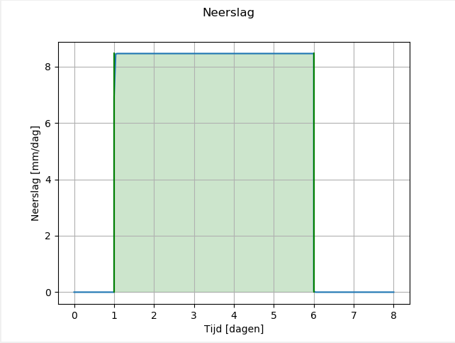
Het resultaat van het simuleren van deze bui kan vervolgens worden geanalyseerd met de HHNK Toolbox. De kaarten die het resultaat zijn van die analyse kunnen worden gebruikt om eventuele onrealistische resultaten te vinden die worden veroorzaakt door fouten in het model.
De tests die worden gedaan door de Toolbox zijn onderverdeeld in: * 0d1d test
In deze test worden de 1d nodes uit het 3di resultaat gefilterd en op vaste tijdstappen de waterstand voor deze nodes uitgelezen. Deze tijdstappen zijn: * Aan het begin van de som * Aan het begin van de regen * Een dag voor het einde van de regen * Aan het einde van de regen * Aan het einde van de som
Op basis van deze informatie worden de volgende waarden bepaald (in centimeters): * Het verschil in waterstand tussen het begin van de som en het begin van de regen (uitzakking initieel peil) * Het verschil in waterstand tussen het begin van de regen en het einde van de regen (streefpeilhandhaving) * Het verschil in waterstand tussen het einde van de regen en een dag daarvoor (stabiele waterstandsverhoging einde regen) * Het verschil in waterstand tussen het einde van de regen en het einde van de som (herstel streefpeil)
- Hydraulische test
In deze test worden eveneens de 1d nodes uit het 3di resultaat gefilterd. Voor kunstwerken en watergangen corresponderend met deze nodes worden de waterstanden aan het begin en einde van het scenario uitgelezen. Voor deze watergangen en kunstwerken wordt het volgende bepaald:
* Het debiet in m3/s (q)
* Het verhang (cm/km)
* De stroomsnelheid in m/s (u)
* De stroomrichting
Als er voldoende vertrouwen in de uitkomsten van het model is kan het verhang over watergangen en kunstwerken worden vergeleken met geldende normen (bijvoorbeeld 4 cm/km).
Bank levels
Als het 0d1d model is goedgekeurd kan deze test worden gedraaid. De bank levels test is grotendeels bedoeld om het model
klaar te maken voor 3di simulaties waarbij uitwisseling plaatsvindt tussen het watersysteem en het maaiveld.
Door de resultaten van de simulatie te analyseren wordt bepaald welke watergangen een 1d2d verbinding hebben over een
levee heen. Voor deze watergangen wordt een bank level voorgesteld gelijk aan de hoogte van de levee om vroegtijdige
uitwisseling te voorkomen. Voor overige watergangen is het voorgestelde bank level streefpeil + 10, waar het streefpeil
bepaald wordt aan de hand van de connection_node_start_id die correspondeert met de watergang.
Als een 1d2d verbinding op een connection node ligt wordt voorgesteld hier een manhole aan toe te voegen met drain level gelijk aan de levee hoogte.
Het draaien van de bank levels test kan worden gedaan met elk 3di resultaat zolang het reken grid niet is veranderd. De inhoud van het scenario is hierbij niet relevant.
1d2d tests
Wanneer de bank levels zijn bijgewerkt en waar nodig manholes zijn toegevoegd kan de 1d2d test worden gedraaid. Dit houdt in dat er opnieuw een test bui wordt gesimuleerd met 3di.
Deze test werkt alleen wanneer het model in de 1d2d-toets-staat is ingesteld (zie Model staat aanpassen).
De test bui begint in dit geval met een uur droog, dan twee uur regen (17,75 mm/uur), dan 12 uur droog.
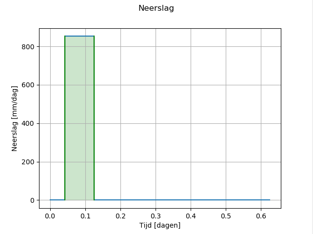
Het resultaat van het simuleren van deze bui met het model kan vervolgens worden geanalyseerd met de HHNK Toolbox. De kaarten die het resultaat zijn van die analyse kunnen worden gebruikt om eventuele onrealistische resultaten te vinden die worden veroorzaakt door fouten in het model.
Als de 1d2d test resultaten goedgekeurd zijn is het model klaar voor gebruik.
De test die worden gedaan door de Toolbox zijn als volgt onder te verdelen:
- Resultaat nodes inlezen
Deze functie leest alle 2d nodes uit het 3di resultaat en berekent de volgende waarden: * de minimale DEM waarde binnen het gebied van de betreffende node (geometrie is omgezet naar een vierkant) * het totale oppervlak dat de node beslaat
Vervolgens wordt op drie tijdstappen (het begin van de regen het einde van de regen en het einde van de som) de volgende informatie berekend: * de waterstand op de genoemde tijdstappen * de hoeveelheid water (volume in m3) per tijdstap * het natte oppervlak per tijdstap (in m2) * opslag van regen in het gebied van de node (hoeveelheid water / totale oppervlak gebied)
(* Wanneer het gaat om het standaard 1d2d test scenario)
- Stroom lijnen inlezen
Deze functie leest alle stroom lijnen in uit het 3di resultaat. Vervolgens wordt gekeken naar het type van de lijn (1D2D of 2D). Vervolgens wordt op drie tijdstappen (het begin van de regen het einde van de regen en het einde van de som) het volgende bepaald: * De waterstand per tijdstap * Het debiet (q) in m3/s per tijdstap * De stroomsnelheid in m/s per tijdstap * De stroomrichting per tijdstap
- Waterstanden uitlezen
Deze functie bepaalt de waterstanden op de gegeven tijdstappen op basis van het 3di resultaat. Vervolgens wordt op basis van de DEM en de waterstand per tijdstap de waterdiepte bepaald.